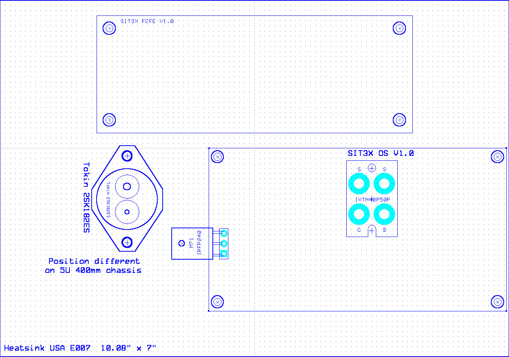
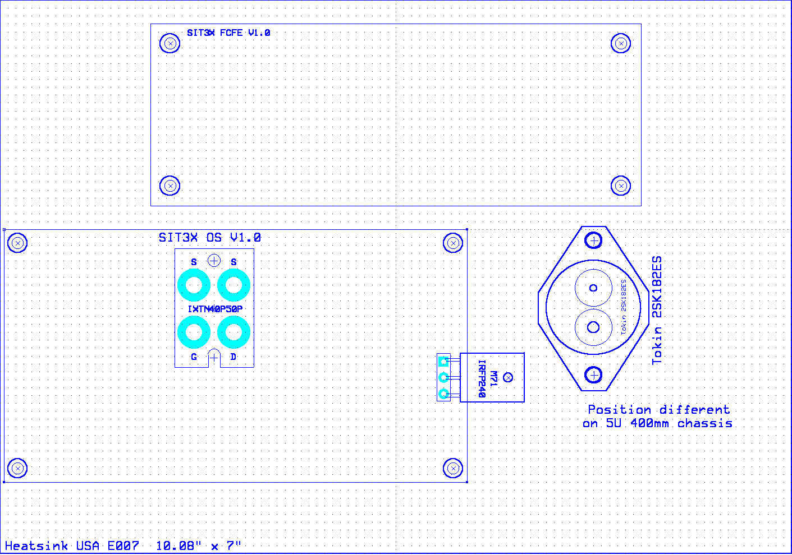

The images in drawings below can be extracted and printed to
actual scale and used as templates for cutting and drilling of the
SIT3X chassis components.
Heatsink with Left OS PCB. Height is 7.0".

Heatsink with Right OS PCB. Height is 7.0".
